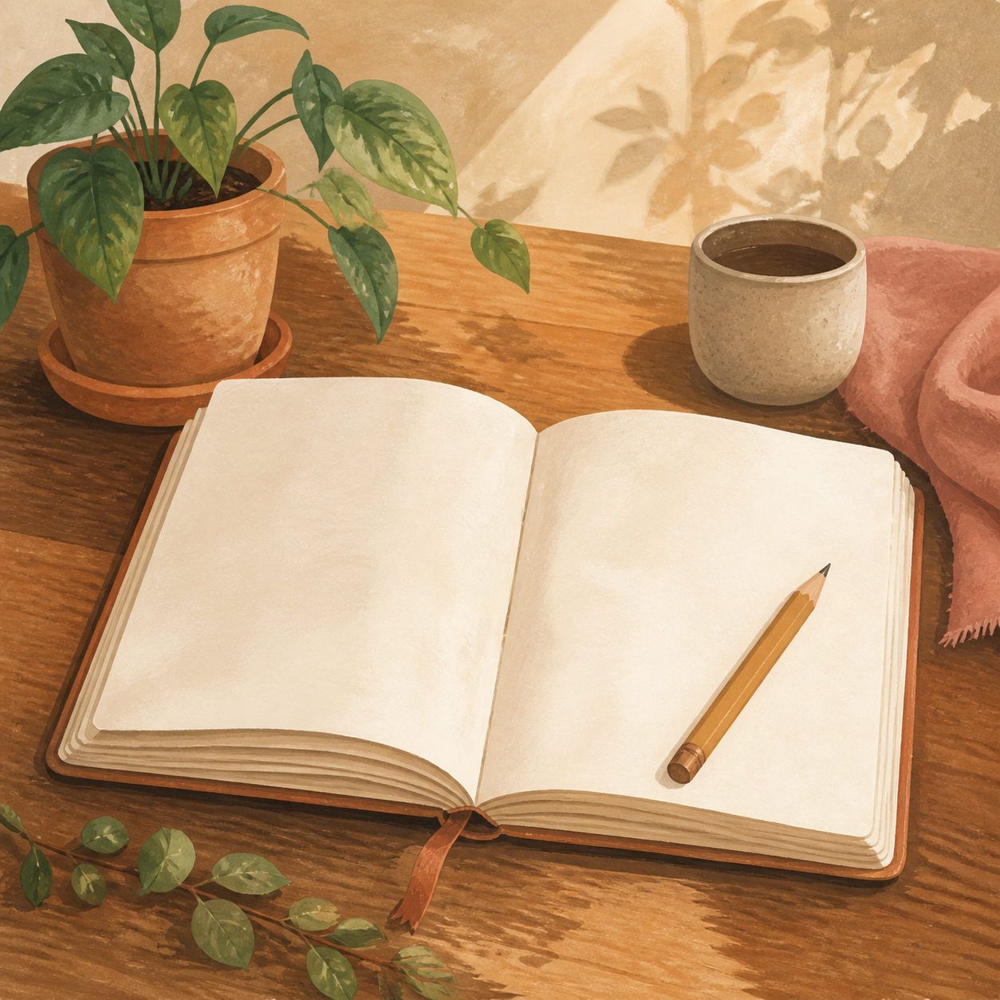

Ваш кабінет
Спокійна картина за результатами тесту.

Тут зʼявиться ваша динаміка
Пройдіть тест разом із дитиною — і кабінет покаже головну зону уваги, теплі кроки та історію проходжень. Поки що тут порожньо.
Демонстраційні дані — це приклад того, який вигляд матиме кабінет. Ваші реальні дані зʼявляться після проходження тесту.
Як справи в навчанні
загалом ростеФокус і мотивація
Динаміка між тестами
від тесту до тестуРекомендовані наступні кроки
із вашого останнього результатуНавчання дитини
Усі урокиПлан на тиждень
Пнзроб.
Урок математики — 10 хв
Максим пройшов сам. Перша маленька перемога.
Втсьог.
Спитати про друзів
Без допиту — просто «з ким зараз тобі добре?».
одноліткиЧт2 дні
Перевірити настрій у застосунку
Мʼякий сигнал від Максима — без контролю.
Сб4 дні
Підсумок тижня разом
Що вдалося, що складно — спокійно й по-доброму.
О
Безкоштовний урок з математики
з Оксаною · 1 заняття безкоштовно
Спершу причина, потім математика. Підліток проходить сам, у своєму темпі.
Почати урокІсторія проходжень
«Найголовніше — я перестала тривожитися наосліп. Видно, де болить насправді, і що з цим робити вже сьогодні.»
Олена, мама Максима · приклад відгуку